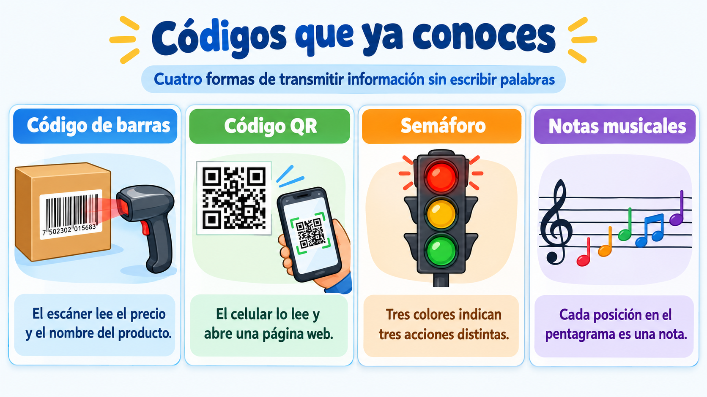
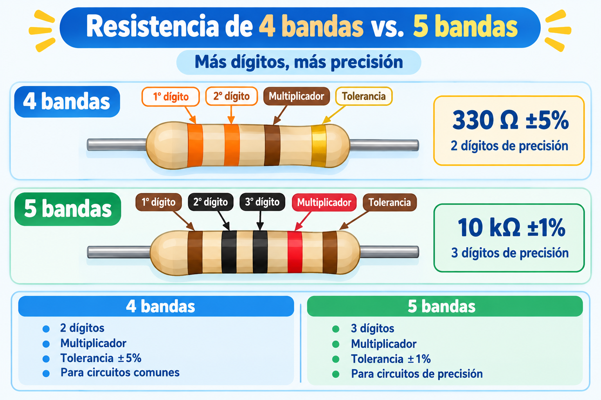
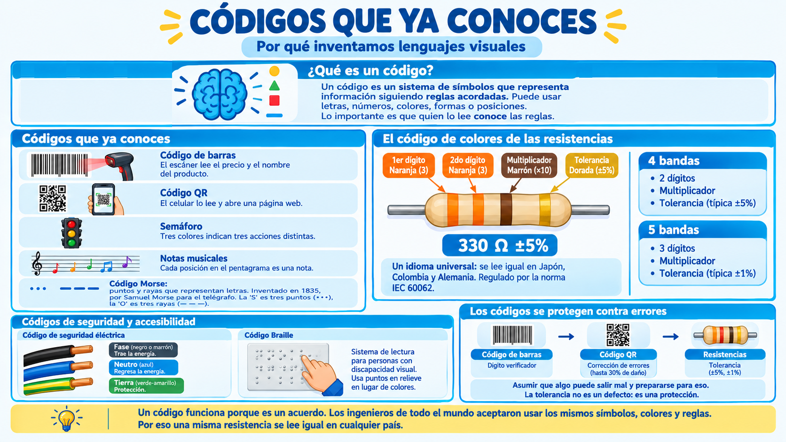

🔵 Códigos que ya conoces
🌍 Vivimos rodeados de códigos
📖 ¿Qué es un código? Un código es un sistema de símbolos que representa información siguiendo reglas acordadas. Puede usar letras, números, colores, formas o posiciones. Lo importante es que quien lo lee conoce las reglas.
Con esa definición en mente, mira a tu alrededor. Es muy probable que estés rodeado de códigos sin darte cuenta. Todos ellos sirven para lo mismo: transmitir información de forma rápida y visual, sin necesidad de escribir palabras.
Aquí van algunos ejemplos que ves todos los días:

- Código de barras: las líneas negras del empaque de un producto. Un escáner las lee y sabe el precio, el nombre y el fabricante.
- Código QR: el cuadrito con cuadros negros y blancos. Con el celular se lee y aparece una página web, un video o un mensaje.
- Semáforo: rojo, amarillo, verde. Tres colores que indican tres cosas distintas. Todo el mundo los entiende.
- Notas musicales: puntos y líneas en un pentagrama. Cada posición indica una nota distinta.
- Código Morse: puntos y rayas que representan letras. Fue inventado en 1835 por Samuel Morse para el telégrafo. Cada letra se representa con una combinación específica: la "S" es tres puntos (···), la "O" es tres rayas (— — —). Durante más de un siglo, fue el idioma principal de las comunicaciones a larga distancia.
💡 Idea clave: todos estos códigos tienen algo en común. Usan formas, colores o posiciones para transmitir información. No necesitan palabras escritas.
🎨 El código de colores: un código más
El código de colores de las resistencias es un código más de esta familia. Cada banda de color representa un número. Con solo cuatro bandas, la resistencia dice exactamente cuál es su valor.
Vamos a ver cómo funciona con un ejemplo. Mira esta resistencia:

Si aplicas la tabla de colores que ya conoces:
- 🟠 Naranja = 3
- 🟠 Naranja = 3
- 🟤 Marrón = ×10
- 🟡 Dorado = ±5%
El resultado es 330 Ω ±5%. Una resistencia que probablemente usarás para proteger un LED.
🌐 ¿Por qué es un código universal?
Un ingeniero en Japón, otro en Alemania y otro en Colombia pueden leer la misma resistencia con el mismo código. Eso es posible porque existe una norma internacional: la IEC 60062. Todos los fabricantes del mundo acordaron usar los mismos colores para los mismos valores. Por eso el código de colores funciona como un idioma común.
💡 Comparación con el código QR: el código QR también es universal. Un celular fabricado en China puede leer un QR generado en Colombia. La razón es la misma: todos los fabricantes acordaron seguir un estándar. Los códigos funcionan porque son acuerdos entre personas.
🔍 Otros componentes con código de colores
El código de colores no es exclusivo de las resistencias. Otros componentes también lo usan, y por la misma razón: son demasiado pequeños para llevar números impresos.
🔌 Los cables eléctricos
Los cables de las instalaciones eléctricas de tu casa tienen un código de colores muy importante. No es decorativo: es un código de seguridad.
- Fase: generalmente negro o marrón. Es el cable que trae la energía.
- Neutro: generalmente azul. Es el cable por el que regresa la energía.
- Tierra: generalmente verde-amarillo. Es el cable de protección.
⚠️ Importante: este código es un acuerdo internacional para que cualquier electricista, en cualquier país, pueda trabajar con seguridad. Nunca manipules cables eléctricos de la pared. Solo los electricistas profesionales deben hacerlo.
🔋 Los condensadores
Algunos condensadores electrolíticos también tienen bandas de colores o franjas para indicar su voltaje máximo y su polaridad. Igual que las resistencias, usan señales visuales para comunicar información crítica.
💡 Algunos LEDs
Algunos LEDs tienen una banda de color en el cuerpo de plástico que indica cuál de las dos patas es el cátodo (la pata negativa). Es la misma idea del código de colores, pero aplicada a otro componente.
💡 Lo que tienen en común: todos estos códigos existen porque el componente es demasiado pequeño para llevar números, o porque la información debe leerse de un solo vistazo. Los códigos visuales resuelven ese problema.
🔤 ¿Y si no puedes ver? El código Braille
El código de colores no funciona para todas las personas: alguien con daltonismo puede confundir el rojo con el verde. Entonces, ¿qué hacen las personas con discapacidad visual para leer?
El código Braille es un sistema de lectura para personas con discapacidad visual. En lugar de colores, usa puntos en relieve organizados en celdas. Cada combinación de puntos representa una letra, un número o un signo. Se lee con la yema de los dedos.
💡 Cada código está diseñado para quienes lo usan: el código de colores funciona para quien puede ver los colores. El Braille funciona para quien no. Los códigos no son neutrales: algunos incluyen a ciertas personas y otros las excluyen. Diseñar pensando en la accesibilidad es parte del trabajo de un ingeniero.
🔬 Resistencias de 5 bandas: más precisas
Hasta ahora hemos hablado de resistencias de 4 bandas. Pero también existen resistencias de 5 bandas. Estas son más precisas y se usan en circuitos que necesitan valores exactos.

🔍 La diferencia
Las resistencias de 4 bandas tienen:
- 2 bandas para dígitos
- 1 banda para multiplicador
- 1 banda para tolerancia
Las resistencias de 5 bandas tienen:
- 3 bandas para dígitos (un dígito más de precisión)
- 1 banda para multiplicador
- 1 banda para tolerancia
Ese tercer dígito permite expresar valores más precisos. Por eso las resistencias de 5 bandas suelen tener tolerancias más ajustadas (±1%, ±0.5% o menos).
💡 ¿Cuándo usar una de 5 bandas? Cuando tu circuito necesita un valor exacto. Por ejemplo, en instrumentos de medida o en circuitos de audio de alta calidad. Para un LED, con una de 4 bandas es suficiente.
🛡️ Los códigos se protegen contra errores
Los códigos modernos no son perfectos: siempre hay posibilidad de que algo se lea mal. Por eso incluyen mecanismos para detectar y corregir errores. La idea es la misma en todos: asumir que algo puede salir mal y prepararse para eso.
- Código de barras: tiene un dígito verificador que confirma si la lectura es correcta. Si alguien borra un número, el sistema lo detecta y rechaza la lectura.
- Código QR: tiene corrección de errores. Incluso si se daña el 30% del código, todavía se puede leer. Por eso los QR con logos en el centro siguen funcionando.
- Resistencias: la tolerancia (±5%, ±1%) es el margen de error aceptable del valor. No se busca el valor exacto, sino un valor dentro de un rango seguro.
💡 La tolerancia no es un defecto: es una protección. Aceptar un margen de error permite que los códigos sigan funcionando incluso cuando algo se lee mal, se desgasta o se daña. Es un principio que verás una y otra vez en ingeniería.
🔍 Taller: El clasificador de resistencias
Vas a convertirte en un clasificador de resistencias. Te darán un grupo de resistencias mezcladas, y tu misión es identificar el valor de cada una y ordenarlas de menor a mayor.
💡 Dos formas de hacer este taller: puedes hacerlo en el aula (con resistencias del kit del colegio) o llevarlo a casa para hacerlo en familia. Tu docente te dirá cuál elegir.
🧰 Materiales
- Ocho resistencias de valores distintos (pueden ser de 4 o 5 bandas).
- Una tarjeta impresa con la tabla de colores.
- Tu cuaderno de bitácora.
- Una lupa (opcional, pero ayuda mucho).
- Buena iluminación.
🛠️ Procedimiento
- Reúne las resistencias. Ponlas sobre la mesa, sin ordenar.
- Lee cada una con la tabla de colores. Antes de leer, identifica si tiene 4 o 5 bandas.
-
Dibuja esta tabla en tu bitácora y complétala:
# N.º de bandas Colores Valor leído Tolerancia 1 2 3 4 5 6 7 8 - Ordena las resistencias de menor a mayor valor.
- Identifica la más precisa. ¿Cuál tiene la tolerancia más pequeña? ¿Es de 4 o de 5 bandas?
📝 Mi nota sobre el taller
Cuando termines, escribe una nota breve al final de tu hoja de registro. No es una tarea, es una reflexión. Puedes escribir sobre:
- ¿Con quién hiciste el taller?
- ¿Fue más fácil leer una de 4 o una de 5 bandas? ¿Por qué?
- ¿Qué te sorprendió más de todo el proceso?
❓ Pregunta guía
Piensa en el código QR y en el código de colores. ¿Qué tienen en común? ¿Por qué crees que los humanos preferimos códigos visuales para transmitir información?
💡 Reto adicional: busca en tu casa un código que uses todos los días y que no sea ninguno de los que vimos en la primera imagen. Puede ser el código de la tarjeta del bus, los íconos del control del televisor, o las señales del cuerpo humano. Anótalo en tu bitácora.
⚠️ Seguridad: nunca intentes leer resistencias que estén soldadas a una placa conectada a la corriente. Si encuentras una resistencia dentro de un aparato, primero desconecta el aparato y retira las pilas.
📜 Los que pusieron orden al caos
El código de colores no lo inventó una sola persona. Fue un acuerdo entre muchos. Y esa es una historia que vale la pena conocer.
📡 El problema de los años 20
Hace casi cien años, la radio estaba en pleno auge. Los fabricantes producían resistencias de todos los tamaños y valores. Pero había un problema: cada fabricante las pintaba como quería. Un ingeniero que compraba resistencias de tres marcas distintas no podía compararlas. ¡Era un caos!
🤝 El acuerdo de la RMA
Entonces los fabricantes se reunieron en una asociación llamada RMA (Radio Manufacturers Association). Y tomaron una decisión: todos usarían el mismo código. Cada color tendría siempre el mismo valor, sin importar quién fabricara la resistencia.
Ese acuerdo funcionó tan bien que se convirtió en norma internacional, administrada hoy por la IEC. Gracias a ese acuerdo, una resistencia fabricada en Japón se lee igual que una fabricada en Colombia.
🌍 Otros acuerdos que usas todos los días
El código de colores no es el único acuerdo internacional. También lo son:
- El USB: el enchufe con el que cargas tu celular.
- El Wi-Fi: la señal que conecta tu celular a internet.
- El HTML: el idioma en el que están escritas las páginas web.
- El código QR: el cuadrito que lees con la cámara.
Todos ellos funcionan porque los fabricantes de todo el mundo aceptaron seguir las mismas reglas.
La lección: la normalización no la hace un genio, la hace un acuerdo. Los ingenieros se pusieron de acuerdo para hacer la vida más fácil a todos. Y esos acuerdos son la base de toda la tecnología moderna.
Fuentes: archivos históricos de la RIA/RMA, la EIA y la norma IEC 60062.🗺️ Repaso visual

Códigos que ya conoces
Dale play y en 6 minutos descubrirás:
- 🌍 Rodeados de códigos: el código de barras, el QR, el semáforo, las notas musicales y el Morse.
- 🎨 El código de colores: cómo un idioma visual se vuelve universal.
- 🔌 Códigos de seguridad y accesibilidad: los colores de los cables y el código Braille.
- 🛡️ La tolerancia como protección: por qué los códigos modernos incluyen corrección de errores.
- 🔬 Resistencias de 5 bandas: cuándo y por qué se necesita más precisión.
💡 Escúchenlo en familia y comenten qué códigos usan en casa sin darse cuenta.